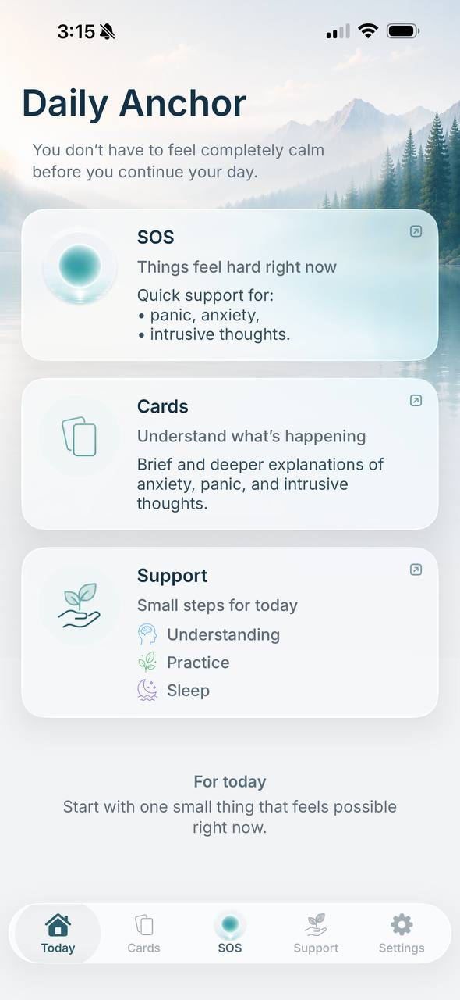

Panic and body sensations
Panic Attacks: Why They Feel So Dangerous—and Why the Cycle Keeps Returning
A panic attack can begin with a single sensation: your heart beats harder, it feels difficult to get a full breath, you become lightheaded, or everything suddenly feels unreal.
Within seconds, anxiety supplies an explanation:
“I’m having a heart attack.”
“I’m going to pass out.”
“I’m about to lose control.”
The sensation is real. The conclusion anxiety jumps to is not proof that you are in danger.
To understand panic, it helps to look beyond the symptoms and see the entire cycle: what you felt, what the sensation seemed to mean, what you did next, and what your threat system learned from that response.
The short answer
A panic attack is a sudden surge of intense fear or discomfort. It can include a racing or pounding heart, shortness of breath, shaking, dizziness, nausea, chest discomfort, feelings of unreality, and fear of losing control.
Your body may respond as if you are facing a serious threat even when there is no obvious danger around you.
The cycle often looks like this:
- 01Body sensation
- 02Dangerous interpretation
- 03Stronger anxiety
- 04Checking or avoidance
- 05Brief relief
- 06Greater sensitivity to the next sensation
The symptoms are not imaginary. They can feel overwhelming. But the meaning anxiety assigns to them can intensify the body’s alarm response.
A panic attack is not the same as panic disorder
A panic attack describes an episode: a sudden surge of fear and physical sensations.
Panic disorder is a diagnosis made by a qualified professional. It generally involves recurring unexpected panic attacks, ongoing fear of another attack, and changes in behavior—such as avoiding transportation, stores, exercise, or places where leaving might feel difficult.
Not everyone who has a panic attack develops panic disorder.
Similar physical sensations can have different causes. New, severe, unusual, or changing symptoms should not automatically be labeled as anxiety. They should be discussed with a medical professional.
What happens in your body
When your brain detects possible danger, your body prepares to act.
Your heart may beat faster. Your breathing changes. Your muscles tighten. Your attention narrows and begins scanning for a threat. You may notice shaking, sweating, heat, weakness, dizziness, tingling, nausea, or a sense of being detached from what is happening.
This response makes sense when danger is present. During a panic attack, however, the alarm response itself can begin to feel like the danger.
A pounding heart becomes “evidence of a heart attack.”
Lightheadedness becomes “proof that I’m going to pass out.”
A sense of unreality becomes “a sign that I’m losing control.”
Now you are not only afraid of a possible threat. You are also afraid of your body’s reaction to it.
Why the fear escalates
Anxiety rarely says:
“I noticed a sensation, but I don’t know what it means yet.”
It jumps to the most dangerous explanation.
Your attention then turns inward. You monitor your heartbeat, breathing, balance, vision, or sense of reality.
The more closely you monitor your body, the more you notice. The more you notice, the more convincing the dangerous conclusion feels. Anxiety rises, and the physical sensations may rise with it.
One example: “My heart is racing—this is a heart attack”
You notice your heartbeat.
The conclusion arrives:
“Something dangerous is happening to me.”
You count your pulse, stop moving, monitor your chest, search your symptoms, or ask someone to confirm that you are okay.
If the checking brings relief, your anxiety drops for a while.
But your brain may not learn, “There was no danger.” It may learn:
“I stayed safe because I checked in time.”
The urge to check may then arrive even faster the next time.
A similar cycle can form around thoughts such as:
- “I’m going to pass out.”
- “I won’t be able to breathe.”
- “My blood pressure will spike and I’ll have a stroke.”
- “I’m going to lose control.”
- “If panic happened here once, it will happen here again.”
In Ailin, each thought is explored separately—along with the sensations, feared meaning, and responses that may be keeping the cycle going.
Checking, reassurance seeking, and avoidance
Seeking medical care for new or unusual symptoms is reasonable. Following medical guidance matters.
The problem can develop when, after an appropriate medical evaluation, you keep checking the same familiar sensation again and again.
For example, you may:
- repeatedly check your heart rate or blood pressure;
- constantly monitor your breathing;
- search symptoms online;
- ask others to confirm that you are okay;
- leave a situation as soon as anxiety appears;
- avoid a place where a panic attack happened before.
These responses make sense: you are trying to protect yourself. They can also reduce fear quickly, which is exactly why they are hard to stop.
But if relief always comes only after checking or escaping, your brain may continue treating the sensation as dangerous.
What you can begin doing differently
The goal is not to force yourself to feel nothing. It is also not to prove with absolute certainty:
“I am completely safe.”
A more useful direction is to gradually change how you respond to a familiar panic wave.
01
Separate the sensation from the conclusion
The sensation:
“I can feel my heart pounding.”
Anxiety’s conclusion:
“This must end in a medical catastrophe.”
They may arrive together, but they are not the same thing.
02
Notice what anxiety is asking you to do
It may demand that you check your pulse, find one more medical explanation, leave the room, or ask someone to give you complete reassurance.
A useful question is:
“Is this action necessary right now, or is it meant to reduce uncertainty for a few minutes?”
03
Choose one small response outside the usual cycle
If the situation is safe and the symptoms are familiar and have already been evaluated by a professional, a different response might mean skipping one repeat check or returning to one ordinary activity.
This is not a promise of immediate relief. The purpose is to gradually stop teaching anxiety that every familiar sensation requires emergency protection.
When recovery becomes another check
Sometimes the effort to recover turns into another form of monitoring.
For example, you may:
- try to eliminate every uncomfortable sensation immediately;
- keep asking yourself, “Do I feel better yet?”;
- postpone ordinary life until you feel completely calm;
- treat one difficult day as proof that all progress is gone;
- replace one check with another—such as stopping pulse checks but constantly evaluating your breathing.
The goal is not to never feel anxious again. A more realistic change is to gradually stop organizing every decision around the need to make anxiety disappear right now.
One difficult day does not necessarily mean you are back at the beginning.
What about breathing?
Breathing can be a useful anchor, but it does not need to become another test:
“Am I breathing correctly?”
“Why haven’t the sensations stopped yet?”
You can gently return your attention to a more comfortable exhale or a guided audio practice. The goal is not to make your breathing perfect within seconds. It is to move through a difficult moment without adding more struggle or frightening conclusions.
When to seek professional help
Talk with a physician or mental health professional if:
- panic attacks keep happening;
- fear of another attack takes up a significant amount of time;
- you have begun avoiding transportation, stores, work, school, exercise, or other ordinary situations;
- checking and reassurance seeking are difficult to stop;
- anxiety is significantly limiting daily life;
- you are unsure whether the symptoms are related to panic or a physical condition.
Evidence-based help for panic disorder includes cognitive behavioral therapy. In some situations, a clinician may also discuss medication.
Seek medical care for new, severe, unusual, or rapidly worsening symptoms.
If you or someone else may be in immediate danger, contact local emergency services. In the United States, call 911. For an emotional crisis or risk of self-harm, call or text 988.
Understanding the cycle is only the beginning
The pattern can look clear when you are calm.
It is much harder to recognize when your heart is already racing, your breathing has changed, and anxiety is demanding that you check something immediately.
Ailin helps you begin with one specific question:
“What am I most afraid is happening right now?”
Thought cards and Understanding materials connect the thought, body sensation, feared meaning, and what happens next.
When reading feels difficult, you can use SOS audio or a short guided practice. Ailin also includes support for sleep and nighttime anxiety.
Ailin does not diagnose symptoms, determine their medical cause, or replace a physician, psychotherapy, or emergency care. It is a self-guided educational tool for understanding familiar anxiety patterns.
Ailin for iPhone
Start with the thought that keeps coming back

Why I created Ailin
Ailin grew out of my own experience with panic attacks, fears about physical symptoms, and repeated checking.
What I needed was a calm explanation of the whole picture: the sensation, the frightening conclusion, the check, the brief relief, and the return of fear.
That is why Ailin does not begin with a general instruction to “just calm down.” It begins with the specific thought that is actually running through your mind.
Frequently asked questions
Can a panic attack feel like a heart attack?
Yes. A panic attack can include a racing heart, shortness of breath, chest discomfort, dizziness, and intense fear. These sensations can overlap with symptoms of physical conditions.
New, severe, unusual, or changing symptoms should not automatically be attributed to anxiety. A medical professional should make the appropriate assessment.
Does one panic attack mean I have panic disorder?
No. Not everyone who experiences a panic attack develops panic disorder. A diagnosis depends on recurring attacks, fear of another attack, changes in behavior, and other factors.
How long does a panic attack usually last?
A panic wave often reaches a high level of intensity quickly. The NHS states that a panic attack usually lasts 5 to 20 minutes, although some episodes may last longer. Tension, fatigue, or heightened alertness can continue after the most intense part has passed.
Why does the fear return after normal medical results?
A medical evaluation may be necessary. But if you continue checking the same familiar sensation again and again afterward, the relief may remain brief.
Anxiety begins asking for new proof every time your body changes. The cycle is then maintained not only by the original sensation, but also by the need for complete certainty.
Can medication help with panic disorder?
Yes. Depending on the situation, a clinician may recommend psychotherapy, medication, or a combination of both.
Some medications are called antidepressants but are also used for panic disorder. Medication selection, possible side effects, and any change to a treatment plan should be discussed with a licensed prescriber.
Do not start, stop, or change prescribed treatment based on information in this article or the app. Ailin does not provide medication guidance or replace medical care.
Understanding begins with a few questions:
What am I feeling right now?
What is anxiety telling me this sensation means?
What is it pushing me to do?
Does that response help over time—or return me to the same cycle?
Find the thought that keeps coming back
Choose a familiar situation, see what may be keeping the cycle going, and begin with one clear next step.
Ailin helps you begin with one specific thought.
Sources
This article was prepared by Ailin Labs using the founder’s lived experience and publicly available materials from:
- National Institute of Mental Health — Panic Disorder: What You Need to Know;
- National Health Service — Panic Disorder and Get Help with Anxiety, Fear or Panic;
- National Institute for Health and Care Excellence — Generalised Anxiety Disorder and Panic Disorder in Adults: Management (CG113);
- MedlinePlus — Panic Disorder;
- Centre for Clinical Interventions — When Panic Attacks;
- peer-reviewed research on the cognitive model of panic and catastrophic interpretations of physical sensations.
This article is for educational purposes only. It is not medical advice, a diagnosis, or treatment.